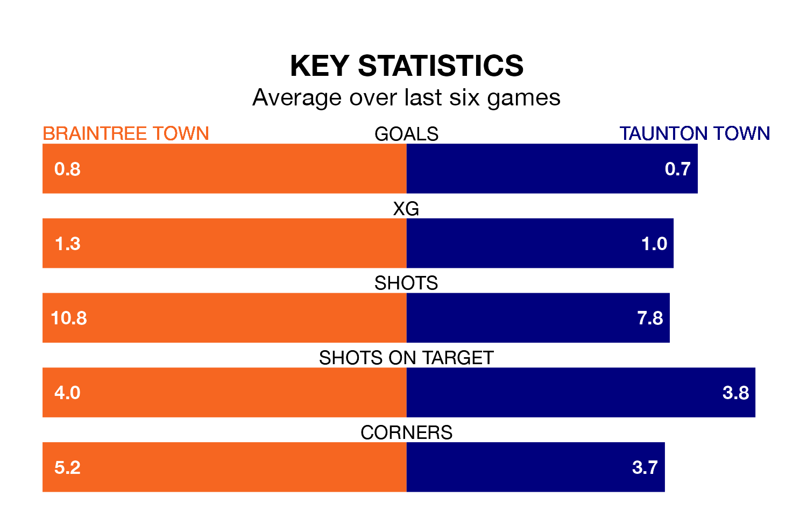

Relegation candidates Taunton Town face a challenge away against high-flying Braintree Town at the Cressing Road Stadium on Tuesday.
Taunton Town are 22nd in the National League South table, and have picked up nine wins and 14 draws in their 40 games to date.
The Iron, meanwhile, are third in the standings with 77 points, having won 22 and drawn 11 of their first 43 matches, and are nine points behind table-toppers Yeovil Town.
Braintree are in good form in the National League South, with four wins and a draw from their last six games.
With no wins and a draw over that period, Taunton's form is much worse – they have taken one point from 18, compared to Braintree Town's 13.
With 42 goals in 40 games so far this season, Taunton Town are the league's second-lowest scorers with 1.0 goals per game. And they are conceding more than average, letting in 64 goals at a rate of 1.6 per game.
The Iron, meanwhile, are average scorers, with 1.4 goals per game. They have conceded 0.9 goals per game.
In the last three years, Braintree and Taunton have played each other on three occasions. Taunton won two of them and they drew once.
Their last meeting was on August 5, when Taunton won 2-1 at home.
Braintree's last match was on Saturday, a 1-0 win against Weston-super-Mare.
Taunton drew 1-1 with Hampton and Richmond last time out, also on Saturday.
Updated: 14:47 (UTC), 09/04/24